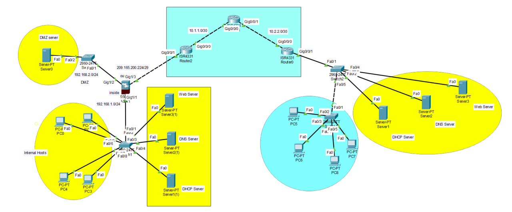

Diseño de Red Corporativa Segura
Configuración integral de switches y routers Cisco. Implementación de segmentación por VLANs, protocolos OSPF y listas de control de acceso (ACL) para proteger el tráfico interno.
Cisco IOS
VLANs
Routing